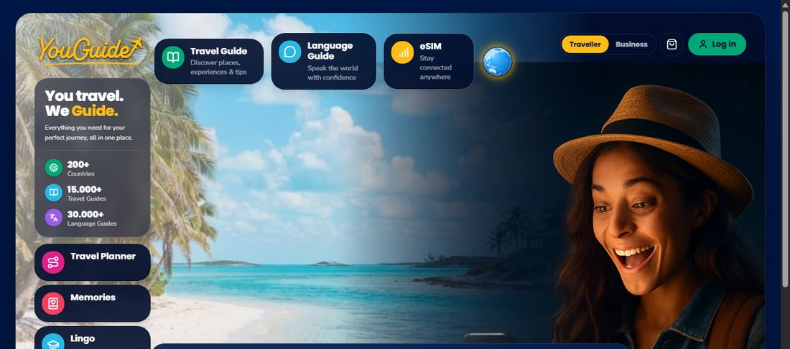

YouGuide content engine youguide.com ↗
A reusable AI publishing system for travel, language, technical and botanical guides.
- The challenge
- Generated travel advice needs to describe real places. A fluent answer alone is not enough to publish.
- What I built
- An AI generation and publishing pipeline with a validation layer that checks referenced locations before publication. I refined the prompting to reduce failures and reused the core across three products.
- The result
- More than 50,000 guides published. The catalogue is licensed through partnerships with leading AI companies and contributes a significant revenue line.
My scope: pipeline development, platform architecture and engineering standards.
LLM APIs · prompt engineering · output validation · Node.js